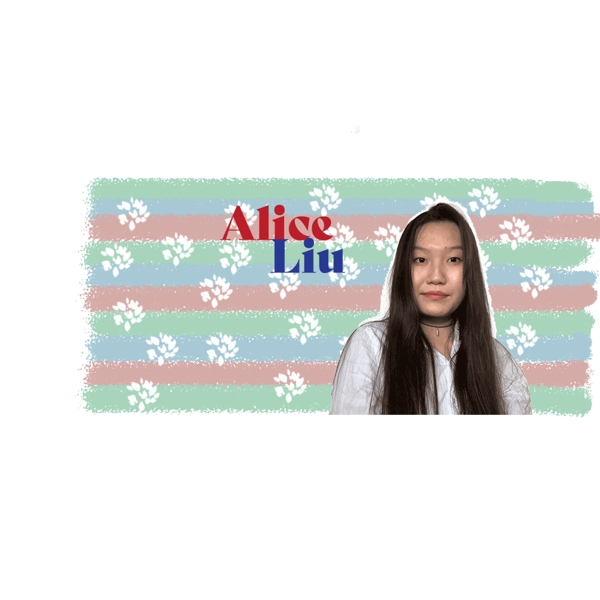

I am Alice Ziqing Liu, a junior at Syracuse University studying Public Relations and Information Management & Technology. I want to be a media relation professional with some tech background. Being an international student from China, I put my passion on helping other students get involved in the Syracuse community. I was a Literacy Corps Tutor for Syracuse University, that allows me to go to local schools, talking with teachers and students there. I am also one of the founders of Rock Academy, here I organize activities and events to implement our goal: We aim to help Chinese students who are intended to incorporate themselves into the diverse American culture. I organize events and activities and use my professional knowledge to promote our group. This Fall 2021 semester I will help Professor Blasyak to teach FYS 101, a Syracuse University first year class to help freshmen transit to college.
I love to cook. On weekends I invite my friends over for dinner, I enjoy the moment that people are happy eating my food.
